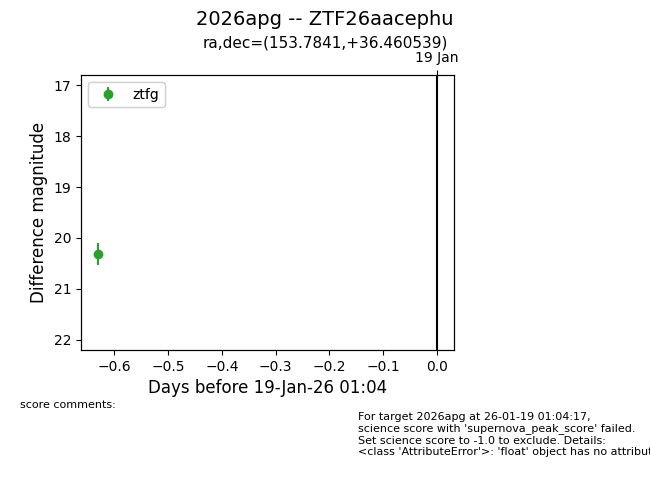
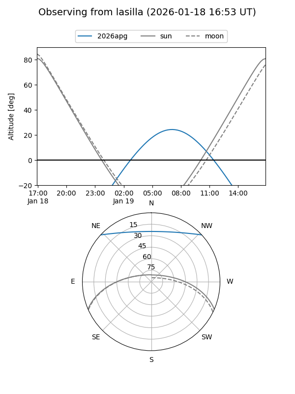
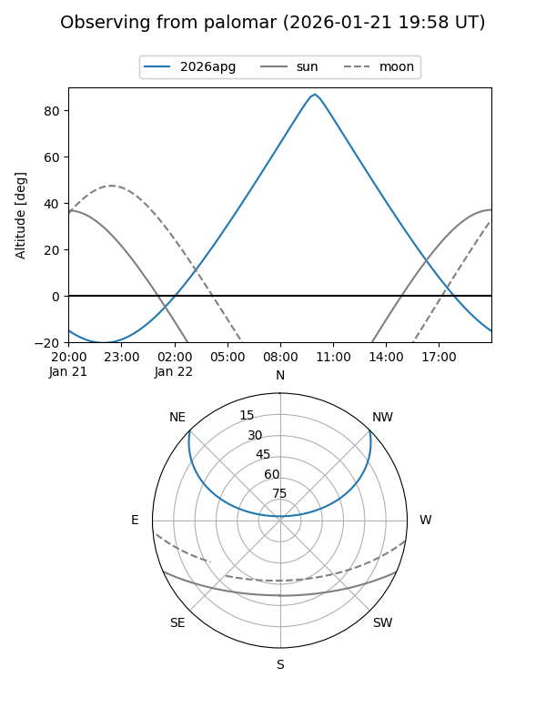
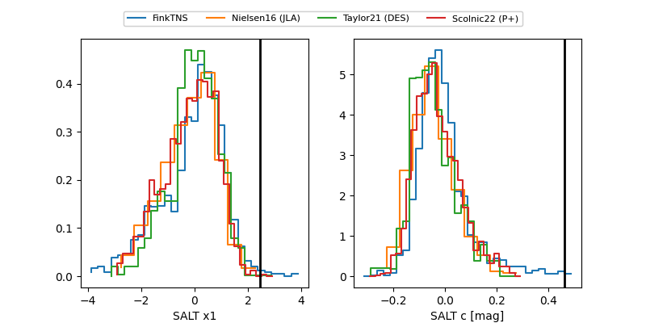

2026apg
Target 2026apg at 2026-01-22 10:56
Aliases and brokers:
FINK: link
Lasair: link
ALeRCE: link
TNS: link
YSE: link
alt names
ZTF26aacephu (ztf,fink_ztf)
2026apg (tns,yse)
Coordinates:
equatorial (ra, dec) = 153.7841,+36.46054
equatorial (HMS+DMS) = 10:15:08.19,+36:27:37.94
galactic (l, b) = (187.2130,+55.75669)
Flags:
Photometry:
last ztfg=20.16, ztfr=19.80
2 ztfg, 1 ztfr detections
Lightcurve

Visibility


Additional plots
